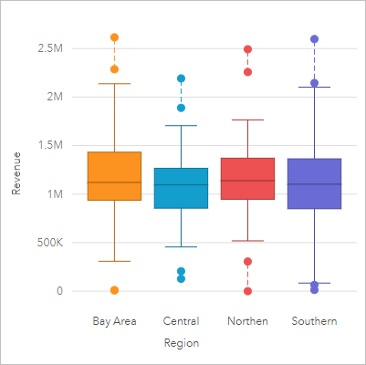
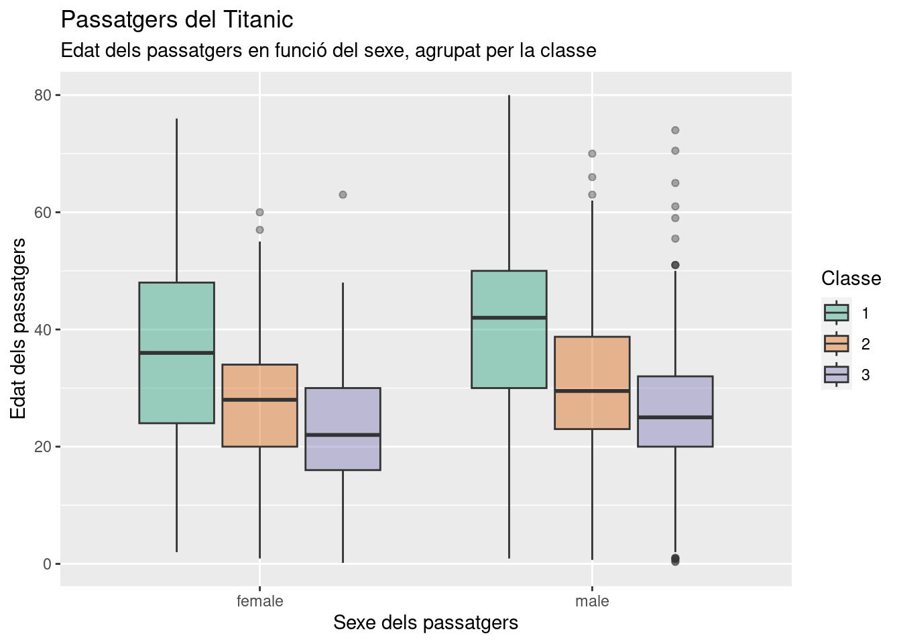

Podem dir que és una tècnica de visualització de dades que ens dona una visió general, clara i entenadora d'una distribució de dades numèriques, des de les tendències centrals fins a valors atipics.

El seu origen es deu a John Tukey quan els anys 70 va introduir el que seria els inicis d'aquesta visualització.
El seu objectiu era visualitzar els 5 números dels conjunts de dades: max, min, quartils i mediana.
Des de llavors el boxplot ha evolucionat per representar dades cada cop més complexes d'una manera visual clara.
L'estructura d'un boxplot (que pot ser horitzontal o vertical) consta d'una caixa central amb l'IQR (interquartile range) i els quartils, els whiskers que s'extenen fins al min i màx i finalment els possibles outliers.

Els tipus de dades per les quals millor funcionen són les dades numèriques, de les quals podem visualitzar la seva ditribució i descripció estadística.
Els boxplots ens visualitzen informació estadística d'una manera molt clara i entenadora, permeten fer comparacions i una ràpida identificació dels outliers.
Ara bé, no ens donen informació detallada de les dades, només tenim un resum i pot ser que per dades esbiaixades no mostri una distribució acurada
Val a dir que sempre és millor limitar els grups a 10 o 12 per no obtenir una visualització confusa.
Font de les dades: Titanic - Machine Learning from Disaster, (https://www.kaggle.com/competitions/titanic)
Eines: RStudio, (llenguatge R)

https://www.jaspersoft.com/articles/what-is-a-box-plot
https://www.atlassian.com/data/charts/box-plot-complete-guide
https://doc.arcgis.com/en/insights/latest/create/box-plot.htm